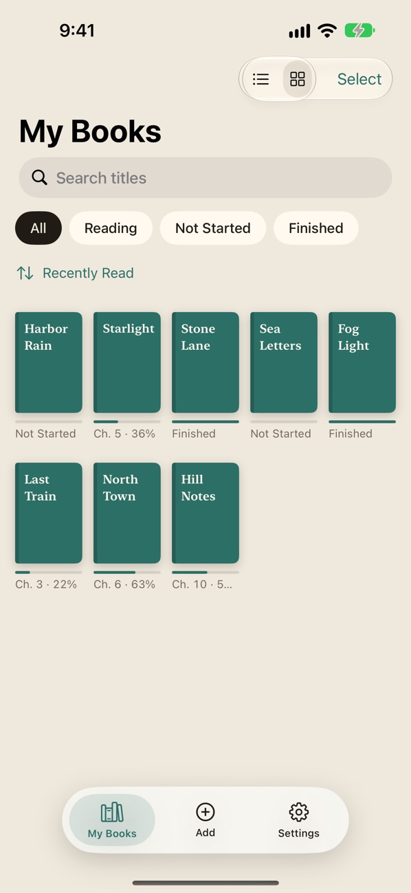
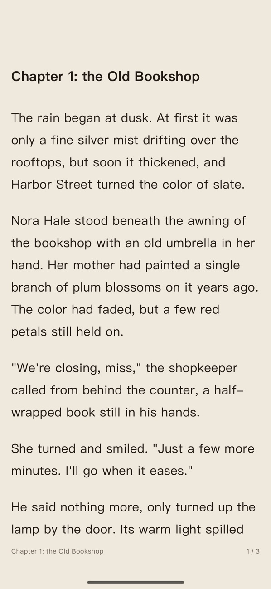
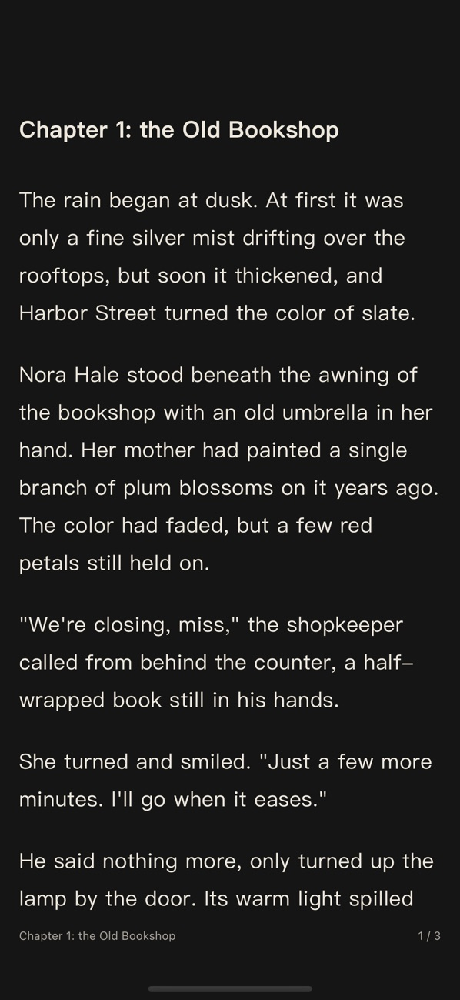

SoftPage: EPUB and TXT books, ready to read
Import TXT novels and EPUB books from the Files app. SoftPage splits them into chapters and opens right where you left off. No ads, no sign-up, and your books stay on your device.
Free on the App StoreiPhone and iPad (iOS 17 or later) · No Android version



SoftPage at a glance
- Formats
- TXT and EPUB
- Reading
- Automatic chapters, remembers your place, search, bookmarks, page turns or scrolling
- Look
- Four reading themes including dark, adjustable font size and line height; Simplified to Traditional Chinese conversion
- Privacy
- No ads, no sign-up; books and progress stay on your device and work offline
- Devices
- iPhone and iPad, iOS 17 or later
- Price
- Free download; Pro is a one-time purchase
How to use SoftPage
Import once, and every time you open it you're back on your page.
Import a book
Tap Import and pick a TXT or EPUB file in the Files app, from iCloud Drive, Downloads or anywhere else.
Chapters are found for you
SoftPage detects chapters so you can jump around from the table of contents.
Make it comfortable
Choose a theme, font size and line height, and page turns or scrolling. Convert Simplified Chinese to Traditional in one tap.
Pick up where you left off
Your place is saved, so tapping a book in the library takes you straight back.
Everything you need to read
Just the words, nothing in the way.
- Automatic chaptersEven plain TXT novels get chapters and a tappable table of contents.
- Search and bookmarksSearch the whole book and bookmark the passages that matter.
- Reading themesFour themes including dark, easy on the eyes at night.
- Chinese conversionConvert Simplified Chinese to Traditional and tidy the layout.
- Pages or scrollingTurn pages side to side or scroll, whichever you prefer.
Price
Free to download, with no ads. The free library holds a limited number of books. SoftPage Pro is a one-time purchase, not a subscription: unlimited books, TXT export and backup to your own iCloud. On a new device, tap Restore Purchases in the app.
FAQ
Which formats does SoftPage support?
TXT and EPUB. Import them from the Files app.
Are there ads?
No. SoftPage has no ads and no account to sign up for.
Are my books uploaded anywhere?
No. Books and reading progress stay on your device. Pro's iCloud backup goes to your own iCloud, which the developer can't read.
Can it convert Simplified Chinese to Traditional?
Yes. Turn on the conversion while reading.
Is there a subscription?
No. It's free to download, and Pro is a one-time purchase that's yours for good.
Is there an Android version?
Not yet. It's on iPhone and iPad only (iOS 17 or later).
More apps by H.C
- QuickKeySave phrases once and insert them with one tap in any app.
- CleanerSwipe to delete photos and trim long videos to free up space.
- SyncMirrorMirror, slow down and loop dance videos to practice.